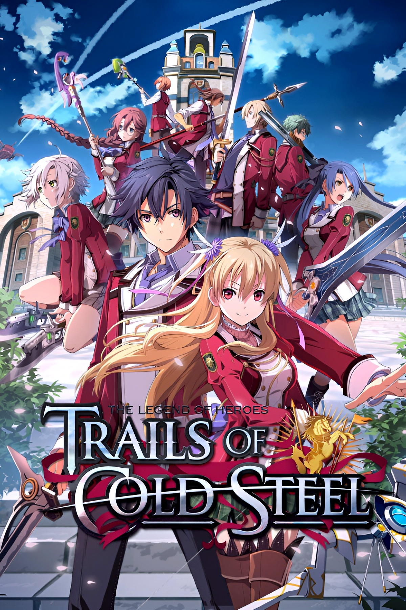
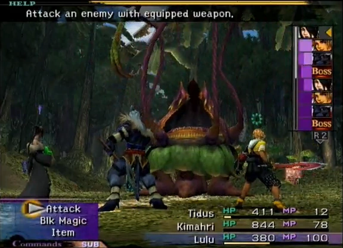

Summary
Project Valkyrie is a game about 5 individuals living life in a new world. Raised on Earth these
junior Valkyries have come to Salphyra, a planet of magic and chaos to expand their powers and knowledge of magic. Olivia, Issold, Stone, Patricia, and Sierra join Tyrano's school, Magic
University. How will these five navigate Salphyra's tough culture and biases against humanity as whole.
In a world not your' own how do you know who you can trust and who will plunge you into chaos.
InspirationThis game is heavily inspired by the game Trails of Cold Steel most
importantly the first game in the series.

The game is planned to have a similar structure to the adventure as Trails of Cold Steel 1, but with less
focus on bond activities and a larger focus on team building and composition. The inspiration for the
combat system is Final Fantasy X's CTB system where you can periodically interact with the environment or
enemy parts to alter how combat plays out.

MechanicsThis is a summary of the game Project Valkyrie.WorldThis is a summary of the game Project Valkyrie.